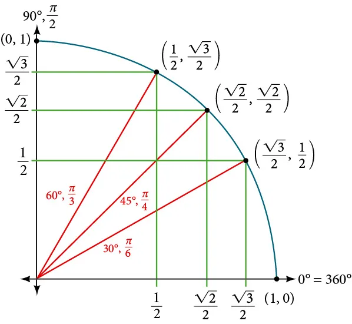

The one dimensional integral that we shall evaluate using monte-carlo methods gives the area of the a quarter of the unit circle. Using this and the fact that the analytical value of the are of a quarter of the unit circle is given as \(\pi/4\), we can find the value of \(\pi\).
\[ \theta = \int_0^1 \sqrt{1-x^2}\ dx = \frac{\pi}{4} \]
The goal is to understand the strengths and weaknesses of the various monte-carlo methods for the purpose of numerical integration.
Here, we shall test the various algorithms for numerical integration and check their labour ratio.
The crude method is the simplest and most inefficient monte-carlo algorithm. It simply involves generating uniformly distributed random points inside the unit square and counting the ratio of those points that lie within the quarter circle. This gives us the ratio of the area of the square and the circle. Since the are of the unit square is 1, the are of the circle can be deduced directly.

The algorithm involves simply generating uniformly distributed set of points within the range (0-1).
def pi_curve(x):
return(np.sqrt(1.0 - x*x))
def pi_curve_var(inp):
(x, meanpi) = inp
return((x-meanpi)**2)nb=24
corrlen=0
npoints=(1 << nb )
npointsall=(1 << nb ) + corrlen
randvals = np.random.rand(npointsall);
pivalslist=np.zeros(npointsall);
# Calculate via MC simul
meanpi = st.mean(map(pi_curve, randvals))
pivals = map(pi_curve, randvals)
meanpilist = meanpi*np.ones(npoints);
varpivals = map(pi_curve_var, zip(pivals,meanpilist))
errorpi=np.sqrt(sum(varpivals)/(npoints-1))/np.sqrt(npoints)
# π
exactI=np.pi/4
print(f'meanpi = {meanpi} exact={exactI} \n error={errorpi} errorExact={exactI-meanpi}')